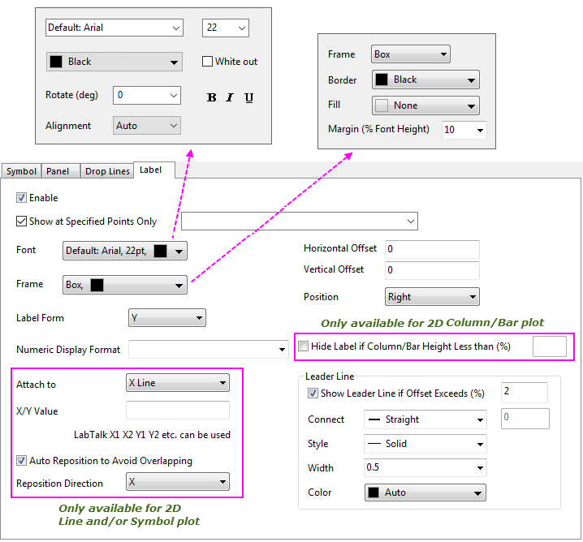
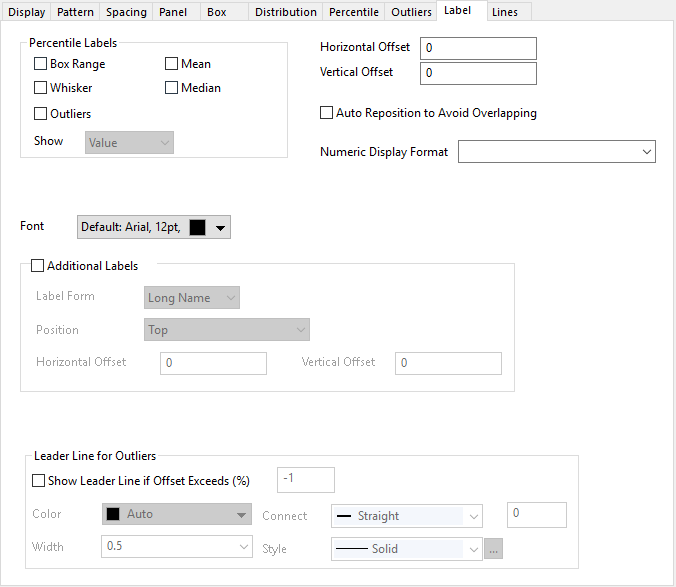
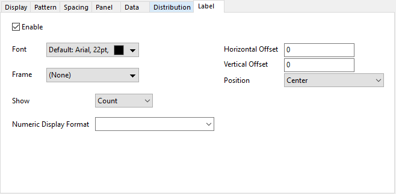
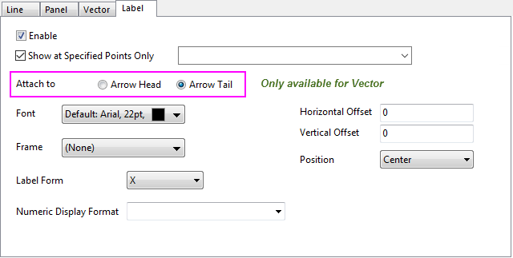
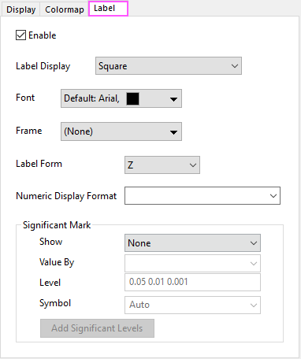
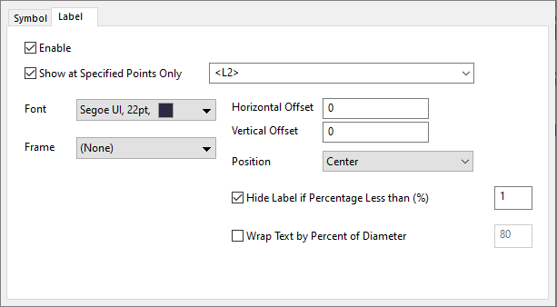
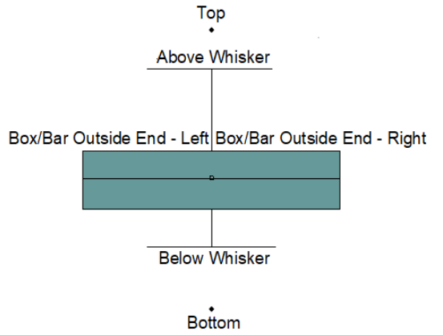

Weitere relevante Videos: Datenzeichnungen mit Hilfe von Daten in einer Arbeitsblattspalte beschriften
Weitere relevante Videos: Datenzeichnungen mit Hilfe von Daten in einer Arbeitsblattspalte beschriften
 Weitere relevante Videos: Datenzeichnungen mit Hilfe von Daten in einer Arbeitsblattspalte beschriften
Weitere relevante Videos: Datenzeichnungen mit Hilfe von Daten in einer Arbeitsblattspalte beschriften
Sie können die Beschriftungsquelle auf zwei Wegen festlegen:
Beachten Sie, dass das vorherige Zuweisen einer Beschriftungsspalte im Arbeitsblatt und deren Verwendung zum Beschriften eines Diagramms keinen Beschriftungsdatensatz mehr im Dialog Details Zeichnung erzeugt, wie das bei früheren Versionen von Origin der Fall war. Alle Datenbeschriftungen verwenden jetzt die Bedienelemente der Registerkarte Beschriftung des Y-Datensatzes, wie unten dokumentiert.
_Label2_Tab/Labelling_Data_Points1.png)
| Registerkarte Beschriftung für 2D-Linien- und/oder Symboldiagramme oder 2D-Säulen-/-Balkendiagramme im kartesischen Koordinatensystem |
 |
| Registerkarte Beschriftung für Boxdiagramme |
 |
| Registerkarte Beschriftung für Histogramm |
 |
| Registerkarte Beschriftung für 2D-Vektor |
 |
| Registerkarte Beschriftung für Dendrogramm |
| Registerkarte Beschriftung für Heatmap |
 |
| Registerkarte Beschriftung für Kreispackungsdiagramme |
 |
Aktivieren Sie dieses Kontrollkästchen, um die Diagramme mit Beschriftungen zu versehen.
|
Beachten Sie, dass das Aktivieren dieses Kontrollkästchens vor Origin 2020b Beschriftungen für alle Zeichnungen in einer Zeichnungsgruppe aktiviert hat. Um die Verbesserungen einzubinden, Daten nur an bestimmten Punkten zu zeigen, aktiviert dieses Feld die Beschriftungen jetzt nur für die ausgewählte Zeichnung, ob sie Teil einer Gruppe ist oder nicht. Sie können jedoch noch immer die Schaltfläche Datenbeschriftungen zeigen auf der Minisymbolleiste verwenden, um alle Zeichnung zu beschriften.
Um Datenbeschriftungen zu ALLEN Zeichnungen in Ihrer Gruppe gleichzeitig hinzuzufügen:
|
Aktivieren Sie dieses Kontrollkästchen, um nur festgelegte Datenpunkte zu beschriften. Wenn es aktiviert ist, verwenden Sie das Listenfeld, um die Beschriftungen zu positionieren:
| Syntax | Beschreibung | Beispiel |
|---|---|---|
| a b c d e | Beschriftungen bei mit Leerzeichen getrennter Liste der Zeilenindizes zeigen | 1 4 5 9 |
| n:m:s | Beschriftungen von Zeilen n bis m zeigen, dabei alle s Zeilen überspringen | 2:0:5 |
| x=a b d g | Beschriftungen bei X-Werten zeigen | x=3.5 7.8 10.2 14.0 |
| [BookN]sheetM!col(A) | Beschriftungen bei Zeilenindizes zeigen, die in festgelegten Spalten enthalten sind | [Book1]Sheet2!Col(A) |
| x=[BookN]sheetM!col(A) | Beschriftungen bei X-Werten zeigen, die in festgelegten Spalten aufgelistet sind | x=[Book1]Sheet2!Col(A) |
|
Ein Nutzen dieser Funktion könnte sein, Metadaten der Zeichnung zum Beschriften einzelner Zeichnungen zu verwenden, anstatt die Standardlegende des Diagramms zu nutzen. Weitere Informationen finden Sie unter FAQ-1065 Wie beschrifte ich jedes Liniendiagramm mit einem legendenartigen Eintrag? |
Aktivieren Sie die Perzentilbeschriftungen für das Boxdiagramm.
| Boxbereich |
Die Beschriftungen werden oberhalb der Box und der Median sowie die unteren Linien neben der Box angezeigt.
Wenn Sie zum Beispiel Perc 25, 75 in der Liste Bereich für Box auswählen, werden die Beschriftungen für das 75. Perzentil, den Median und das 25. Perzentil im Diagramm angezeigt. |
|---|---|
| Whisker | Die Beschriftung der oberen und unteren Whisker werden neben dem Boxdiagramm angezeigt. |
| Mittelwert |
Die Beschriftung des Mittelwerts wird neben dem Boxdiagramm gezeigt.
Die Stelle des Mittelwerts kann mit Symbolen (Registerkarte Perzentile) und/oder horizontalen Linien (Registerkarte Linien) markiert werden. Sie müssen die Anzeige des Mittelwerts auf mindestens einer dieser Registerkarten aktivieren, bevor Sie wählen können, den Mittelwert zu beschriften. Seit Origin 2020 können Sie die Stelle des Mittelwerts mittels einer horizontalen Linie markieren, ohne eine Box zu zeigen (z. B. setzen Sie auf der Registerkarte Box den Typ = Daten), aber Sie müssen vorübergehend Typ = Box aktivieren, um die Beschriftungsboxen zu aktivieren. Wenn diese aktiviert sind, können Sie die Boxanzeige wieder deaktivieren und Ihre horizontale Linie bleibt beschriftet. |
| Median |
Die Beschriftung des Medians wird neben dem Boxdiagramm gezeigt.
Die Stelle des Medians kann mit Symbolen (Registerkarte Prozentangaben) und/oder horizontalen Linien (Registerkarte Linien) markiert werden. Sie müssen die Anzeige des Medians auf mindestens einer dieser Registerkarten aktivieren, bevor Sie wählen können, den Median zu beschriften. Seit Origin 2020 können Sie die Stelle des Medians mittels einer horizontalen Linie markieren, ohne eine Box zu zeigen (z. B. setzen Sie auf der Registerkarte Box den Typ = Daten), aber Sie müssen vorübergehend Typ = Box aktivieren, um die Beschriftungsboxen zu aktivieren. Wenn diese aktiviert sind, können Sie die Boxanzeige wieder deaktivieren und Ihre horizontale Linie bleibt beschriftet. |
| Ausreißer | Legen Sie fest, ob die Beschriftungen der Ausreißer gezeigt werden. Wenn dieses Kontrollkästchen aktiviert ist, können Sie die Gruppe Verbindungslinie für Ausreißer verwenden, um Verbindungslinien für die Ausreißer hinzuzufügen, bei denen der festgelegte Versatz überschritten wurde. |
| Zeigen | Legen Sie fest, ob Wert, Perzentil oder beide für die Beschriftung von Box/Whisker/Mittelwert angezeigt werden sollen. |
Wählen Sie die gewünschte Schriftart für den Beschriftungstext.
Wählen Sie Standard: Schriftartname, um die Schriftart zu verwenden, die in der Auswahlliste Standard der Registerkarte Zeichensätze im Dialog Optionen (Einstellungen: Optionen) festgelegt ist.
Geben Sie die gewünschte Schriftgröße (in Punkten) in das Auswahlfeld ein oder wählen Sie diese aus.
Die Standardgröße wird im Kombinationsfeld Größe in der Gruppe Text-Hilfsmittel der Registerkarte Zeichensätze im Dialog Optionen (Einstellungen: Optionen) festgelegt.
Wählen Sie eine Farbe für die Beschriftungen.
Wenn Farbe auf Auto gesetzt und das Kontrollkästchen Autom. Farbe der Beschriftung entspricht dem Symbol auf der Registerkarte Allgemeines (Ebene Graph im linken Bedienfeld) des Dialogs Details Zeichnung aktiviert ist, dann folgt die Beschriftungsfarbe der Symbolfarbe.
Wenn Farbe auf Auto gesetzt und das Kontrollkästchen Autom. Farbe der Beschriftung entspricht dem Symbol auf der Registerkarte Allgemeines (Ebene Graph im linken Bedienfeld) des Dialogs Details Zeichnung aktiviert ist, dann wird die Beschriftungsfarbe gewählt, die den stärksten Kontrast zur Hintergrundfarbe zeigt.
Aktivieren Sie dieses Kontrollkästchen, um für jede Datenbeschriftung einen weißen Hintergrund zu erhalten.
Wählen oder geben Sie den Winkel in Grad ein, um den sich die Beschriftung drehen soll.
Null Grad ist horizontaler Text.
Das Kontrollkästchen ist nur für spezielle Punkte verfügbar.
Wenn ein Datenpunkt speziell ist, entsprechen seine Eigenschaften denen der Zeichnung, bis Sie ihn benutzerdefiniert anpassen. Betonung bedeutet, dass die Formatierungen Fett, Kursiv und Unterstrichen der Beschriftung dieses speziellen Punkts der Zeichnung folgen. Deaktivieren Sie die Option, um die Formatierungsschaltflächen unten zu bearbeiten.
Klicken Sie auf die Schaltflächen der Textformatierung (Fett, Kursiv und Unterstrichen), um den Beschriftungstext zu formatieren.
_Label2_Tab/Plot_Details_Accent_Buttons.PNG)
Wird verwendet, um mehrzeilige Datenbeschriftungen auszurichten. Nicht für alle Diagrammtypen verfügbar.
Auto: Es wird der Einstellung für Position gefolgt:
Weitere Kombinationen sind möglich durch Festlegen von Ausrichtung = Links, Rechts oder Mitte.
Legen Sie fest, ob ein Rahmen um den Beschriftungstext herum hinzugefügt werden soll. Diese Option ist nicht für das Boxdiagramm verfügbar.
Drei Auswahlmöglichkeiten sind für diese Auswahlliste verfügbar: Kein, Box und Schatten.
Bitte beachten Sie, dass die Option Rahmen für den speziellen Punkt standardmäßig auf Auto gesetzt ist. Dies bedeutet, dass die Einstellungen des speziellen Punkts den Einstellungen der gesamten Zeichnung folgen. Natürlich können Sie diese Einstellungen für den speziellen Punkt nach Ihren eigenen Wünschen anpassen.
Wenn Box oder Schatten als Rahmen ausgewählt ist, können Sie eine Rahmenfarbe für die Boxen der Beschriftungen festlegen.
Wenn Box oder Schatten als Rahmen ausgewählt ist, können Sie eine Füllfarbe für die Boxen der Beschriftungen festlegen.
Der Rand des Rahmens kann in Prozent der Schrifthöhe angepasst werden. Der obere/untere/linke/rechte Rand haben den gleichen Wert. Diese Option ist nicht für das Boxdiagramm verfügbar.
Bitte beachten Sie, dass diese Option für den speziellen Punkt standardmäßig auf Auto gesetzt ist. Dies bedeutet, dass die Einstellungen des speziellen Punkts den Einstellungen der gesamten Zeichnung folgen. Natürlich können Sie diese Einstellungen für den speziellen Punkt nach Ihren eigenen Wünschen anpassen.
Legen Sie die Eigenschaften oder den Datensatz fest, der zum Erstellen der Beschriftung verwendet werden soll.
| X | Verwenden Sie die X-Werte der Daten als Beschriftungen. |
|---|---|
| Y | Verwenden Sie die Y-Werte der Daten als Beschriftungen. |
| Zeilenindizes | Verwenden Sie die Zeilenindizes als Beschriftungen. |
| (X, Y) | Verwenden Sie X- und Y-Werte der Daten als Beschriftungen. |
| Benutzerdefiniert | Verwenden Sie Inhalt und Format, die unter Formatzeichenkette festgelegt sind, um Beschriftungen zu erstellen (siehe nächsten Abschnitt). |
| Col(ColumnShortName) | Verwenden Sie die gewünschte Spalte aus dem Arbeitsblatt als Beschriftungen. Alle Spalten, die sich rechts von den Y-Datenspalten befinden, werden hier aufgeführt. |
Hinweise zu Numerischem Anzeigeformat:
Notizen Formatzeichenkette:
Diese Auswahlliste ist nur für Histogramme verfügbar.
Sie können diese Option verwenden, um festzulegen, welche Werte als Beschriftungen gezeigt werden sollen, Anzahl, Prozentanteil (relative Häufigkeit für jede Klasse in Prozent) oder Beide.
Diese Gruppe ist nur für Vektordiagramme verfügbar.
Wählen Sie, Beschriftungen bei der Pfeilspitze oder beim Pfeilende zu positionieren. Wenn das Vektordiagramm aus einem XYXY-Datensatz erstellt wird, sind die Koordinaten der Beschriftung die des Endpunkts, an dem die Beschriftung angehängt ist.
Das Kontrollkästchen ist nur für spezielle Punkte verfügbar.
Wenn ein Datenpunkt speziell ist, entsprechen seine Eigenschaften denen der Zeichnung, bis Sie ihn benutzerdefiniert anpassen. Autom. Versatz bedeutet, dass die Beschriftungsposition dieses speziellen Punktes der Zeichnung entspricht. Deaktivieren Sie die Option, um Horizontaler Verschiebung und Vertikaler Verschiebung benutzerdefiniert anzupassen.
Der Versatz der Beschriftung wird in Prozent der Schrifthöhe gemessen. Geben Sie einen positiven oder negativen Wert ein, um die Beschriftungsposition anzupassen.
Legen Sie die Beschriftungsposition fest. Diese Option ist nicht für das Boxdiagramm verfügbar.
| Mitte | Die Beschriftung wird in der Mitte des Datenpunkts positioniert. |
|---|---|
| Links | Die Beschriftung wird links oder rechts vom Datenpunkt positioniert. |
| Rechts | |
| Oberhalb | Die Beschriftung wird oberhalb oder unterhalb des Datenpunkts positioniert. |
| Unterhalb | |
| Innen Ende |
Diese Option wird auf Säulen-/Balkendiagramme angewendet.
Positionieren Sie Beschriftungen innerhalb der Säulen/Balken und schließen Sie die untere Linie, wo die Säule/der Balken endet. |
| Innen Basis |
Diese Option wird auf Säulen-/Balkendiagramme angewendet.
Positionieren Sie Beschriftungen innerhalb der Säulen/Balken und schließen Sie die untere Linie, wo die Säule/der Balken anfängt. |
| Außen Ende |
Diese Option wird auf ungestapelte Säulen-/Balkendiagramme, Brückendiagramme oder Lollipopdiagramme angewendet.
Bei Säulen-/Balkendiagrammen und Brückendiagrammen positioniert das Auswählen von Außen Ende die Beschriftungen außerhalb der Säulen/Balken und nahe der Linie, wo die Säulen/Ballen enden. Bei den Diagrammen mit Ankerlinien wie dem Lollipopdiagramm, bei dem Ankerlinien zwei Datenzeichnungen verbinden, positioniert die Auswahl von Außen Ende die Beschriftungen fern von den Endpunkten der Ankerlinien für die Zeichnung(en). |
| Auto |
Diese Option ist für vertikale/horizontale Dendrogramme verfügbar.
Platzieren Sie Beschriftungen immer auf der gegenüberliegenden Seite der Blätter. Dies ist nützlich, um Beschriftungen automatisch neu zu positionieren, nachdem die X- und Y-Achsen ausgetauscht wurden. |
| Winkel außen |
Diese Option ist für kreisförmige Dendrogramme verfügbar.
Positionieren Sie Beschriftungen außerhalb der Blätter. |
| Winkel innen |
Diese Option ist für kreisförmige Dendrogramme verfügbar.
Positionieren Sie die Beschrfitungen entlang der Blätter. |
Dieses Bedienelement ist nur für 2D-Säulen-/Balkendiagramme verfügbar.
Verwenden Sie es, um die Säulen-/Balkenbeschriftung zu verbergen, wenn die Höhe/Länge der Säule/des Balken kleiner als der festgelegte Wert ist. Es werden nur ganze Zahlen unterstützt.
Kritische Länge = Prozentwert % * Y-Achsenlänge
Diese Option ist nur für Kreispackungsdiagramme verfügbar.
Verwenden Sie sie, um Beschriftungen für Kategorien automatisch zu verbergen, deren Anteil weniger als N% beträgt.
Diese Option ist nur für Kreispackungsdiagramme verfügbar.
Verwenden Sie sie, um Beschriftungen automatisch bei einem Prozentsatz des Kategoriedurchmessers umzubrechen.
Diese Bedienelemente ist nur verfügbar, wenn der Diagrammtyp Linie/Symbol im kartesischen 2D-Koordinatensystem ist.
Legen Sie die Referenzposition der Datenbeschriftung fest. Die Position der Datenbeschriftung wird basierend auf den Einstellungen von Horizontale Verschiebung, Vertikale Verschiebung und Position von der Referenzposition aus berechnet.
| Daten | Verwenden Sie die Position der entsprechenden Datenpunkte als Referenz. |
|---|---|
| X-Linie | Verwenden Sie eine Linie von X = Wert als Referenz, d.h. eine Linie parallel zur Y-Achse. |
| Y-Linie | Verwenden Sie eine Linie von Y = Wert als Referenz, d.h. eine Linie parallel zur X-Achse. |
| Fehlerbalken |
Verwenden Sie die Position des Fehlerbalkens als Referenz.
|
Dieses Textfeld ist nur verfügbar, wenn Anhängen an entweder auf X-Linie oder Y-Linie gesetzt ist.
Diese Option wird verwendet, um den Wert festzulegen, der die Referenzposition bestimmt. Der Wert kann ein beliebiges Double sein oder eine LabTalk-Schreibweise wie X1 X2 Y1 Y2. X1/X2 bezieht sich auf die Werte Von/Bis der X-Achse. Dies gilt ebenso für Y1 und Y2.
Sie werden zum Neupositionieren der sich überschneidenden Datenbeschriftungen verwendet.
Dieses Kontrollkästchen wird verwendet, um festzulegen, ob die Neupositionierung zum Vermeiden von Überschneidungen eingeschaltet werden soll. Wenn es nicht aktiviert ist, bleiben die Positionen der Datenbeschriftung relativ zu den Daten, auch wenn sie sich mit anderen Datenbeschriftungen, Datenpunkte oder Verbindungslinien überschneiden.
Diese Auswahlliste ist nur verfügbar, wenn Automatische Neupositionierung, um Überschneidungen zu vermeiden aktiviert ist.
Die Option wird verwendet, um die Richtung festzulegen, in der Datenbeschriftungen verschoben werden, wenn sie neu positioniert werden müssen. Wählen Sie zwischen X und Y, um die Datenbeschriftungen entlang der X- oder Y-Achse neu zu positionieren.
Die Verbindungslinie ist ein Linienobjekt, das die Datenbeschriftung und seine Referenzposition verbindet (bestimmt von der Auswahlliste Anhängen an).
Dieses Kontrollkästchen legt die Anzeige der Verbindungslinie fest. Die Verbindungslinien werden nur gezeigt, wenn der Versatz zwischen Datenbeschriftungen und Datenpunkten eine bestimmte kritische Länge überschreitet. Die kritische Länge wird mit Prozentwert in dem Textfeld neben dem Kontrollkästchen definiert.
Kritische Länge = Prozentwert % * (Layerhöhe + Layerbreite)/2.
Wählen Sie den Verbindungstyp der Verbindungslinie fest. Die sieben Optionen sind Gerade, Polylinie-Horiz., Polylinie-Vert., Stufe-Horiz., Stufe-Vert., Horizontal und Vertical. Polylinie-Horizontal und Polyline-Vertikal erstellen drei Segmentlinien, wobei das mittlere Segment angewinkelt ist. Stufe-Horizontal und Stufe-Vertikal erstellen drei Segmentlinien, wobei das mittlere Segment im rechten Winkel steht.
Wenn Polylinie-Horiz. oder Polylinie-Vert. gewählt ist, können Sie den Prozentanteil des horizontalen oder vertikalen Abstands zwischen zwei Wendepunkten im Textfeld nach der Auswahlliste Verbinden ändern (siehe das Bild (1) unten ). Entsprechend können Sie, wenn Stufe-Horiz. oder Stufe-Vert. gewählt ist, die Position des Wendepunkts nach dem Prozentanteil des horizontalen oder vertikalen Abstands im Textfeld nach der Auswahlliste Verbinden festlegen (siehe das Bild (2) unten).
_Label2_Tab/Label2_tab-connect.png) |
_Label2_Tab/Label2_tab-connect_01.png) |
|
Bild(1) |
Bild(2) |
|
Um eine "L-förmige" Verbindungslinie wie im folgenden Bild zu erhalten, setzen Sie Verbinden = Stufe-Horiz. und geben Sie 0 in das zugehörige Textfeld ein. |
Wählen Sie den Linienstil der Verbindungslinie.
Legen Sie die Breite der Verbindungslinie fest.
Bestimmen Sie die Farbe der Verbindungslinie, entweder durch eine Systemfarbe oder eine benutzerdefinierte Farbe. Wenn Farbe auf Auto gesetzt ist, folgt die Farbeinstellung der Verbindungslinie der Farbe der Datenbeschriftungen.
Diese Option ist nur für Dendrogramme verfügbar.
Aktivieren Sie dieses Kontrollkästchen, um nur die Beschriftungen der Blätter zu zeigen. Das heißt, die Beschriftungen der Knoten werden verborgen.
Diese Option ist nur für Dendrogramme verfügbar.
Aktivieren Sie dieses Kontrollkästchen, um die sich überschneidenden Beschriftungen automatisch zu verbergen.
Diese Auswahlliste ist nur für Heatmaps, einschließlich Heatmaps mit aufgeteilten Kacheln, verfügbar.
Sie unterstützt die fünf Anzeigestile für Beschriftungen: Quadrat, Oberes Dreieck, Oberes Dreieck ohne Diagonale, Unteres Dreieck und Unteres Dreieck ohne Diagonale und Nach Wert.
Wenn Sie die Option Nach Wert für die Beschriftungswerte auswählen, die über Beschriftungsformat festgelegt wurden, können Sie eine Wertbedingung angeben, mit der entschieden wird, welche Zellen die Beschriftungen zeigen sollen.
|
Hinweis:
Wenn die Heatmap X und Y nicht N*N ist, sind diese vier Optionen Oberes Dreieck, Oberes Dreieck ohne Diagonale, Unteres Dreieck und Unteres Dreieck ohne Diagonale nicht verfügbar. |
Fügen Sie zusätzliche Beschriftungen für ein Boxdiagramm hinzu.

Diese Bedienelementgruppe kann verwendet werden, um Signifikanzmarkierungen auf Heatmapzellen hinzuzufügen.
Legen Sie fest, wo die Signifikanzmarkierungen gezeigt werden sollen.
Diese bearbeitbare Kombinationsliste kann die Datenquelle festlegen, um über Signifikanzmarkierungen zu entscheiden.
Geben Sie die Signifikanzniveaus ein, um die Datenquelle zu teilen. Diese Bereiche werden verwendet, um die Markierungen zu bestimmen, die für die Werte gezeigt werden.
Geben Sie die Symbole als Signifikanzmarkierungen ein. Per Standard ist Auto aktiviert, wodurch die Zahl von * entsprechend des Zahlenwerts auf dem Signifikanzniveau bereitgestellt wird.
Klicken Sie auf diese Optin, um eine Fußnote unter dem Diagramm hinzuzufügen und die Signifikanzniveaus zu zeigen.
Wenn zum Beispiel Niveau auf 0.05 0,01 0,001 und Symbol auf Auto(* ** ***) gesetzt sind:
Die Fußnote für die Signifikanzniveaus sieht folgendermaßen aus: * ≤ 0.05 ** ≤ 0.01 *** ≤ 0.001